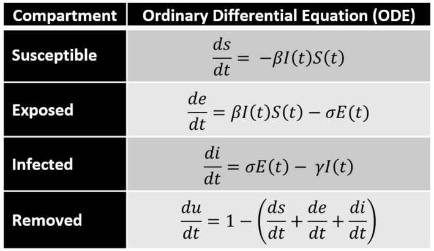

3 Differential Equations in R
We take a quick pause from our git introduction to talk about differential equations in R.
R is best known as a statistical coding language, however, it is often important to incorporate other tools into your workflow to support modeling.
3.1 deSolve
We will rely on the r package deSolve
deSolve is an R wrapper to the FORTRAN ODE solver
As always, we’ll use tools from the tidyverse.
3.1.1 Steps to solving differential equations with deSolve
- Define your first order differential equations
- Define parameters governing the differential equations
- Define initial conditions
- Define time step
- Solve Differential Equations
3.2 Real world example: SEIR
In epedemeology, the SEIR equations govern the spread of a disease through a population.
The S, E, I, and R represent four distinct population bins:
S: Suceptible E: Exposed I: Infected R: Removed
A set of four differential equations govern a population’s movement through these four bins.

\(\beta\): Infectious rate - probability of transmitting disease between a susceptible and an infectious individual
\(\sigma\): 1 / time from exposed to infectiousness
\(\gamma\): 1 / time from infectiousness to recovery
3.3 SEIR Differential Equations using deSolve in R
3.3.1 Define the Ordinary Differential Equations
seir_ode <- function(t,Y,par){
S<-Y[1] # Suseptible
E<-Y[2] # Exposed
I<-Y[3] # Infected
beta<-par[1] # this takes the first slot from the vector par that is passed in - it changes every time
sigma<-par[2] # this takes the second slot from the vector par that is passed in - it remains constant
gamma<-par[3] # this takes the third slot from the vector par that is passed in - it remains constant
# mu<-par[4] # this takes the third slot from the vector par that is passed in - it remains constant
dYdt<-vector(length=3) ## this creates an empty vector of length 3
dYdt[1]=-beta*I*S ## this is the formula for the suseptible population after the first step of the SEIR
dYdt[2]=beta*I*S-sigma*E ## this is the formula for the exposed population after the first step of the SEIR
dYdt[3]=sigma*E-gamma*I ## this is the formula for the infected population after the first step of the SEIR
return(list(dYdt))
}3.3.2 Define Parameters
3.3.3 Define Initial Conditions
iNot <- 1/1000 # proportion of population that is infected on day 1
eNot <- 1/100 # proportion of population that is exposed but not yet infected on day 1
rNot <- 0 # proportion of population that is removed on day 1
sNot <- 1 - iNot - eNot - rNot # proportion of population that is susceptible on day 1
init<-c(sNot,eNot,iNot)3.3.4 Define Time Steps
3.3.5 Solve Differential Equations
## time 1 2 3
## [1,] 0 0.9890000 0.010000000 0.001000000
## [2,] 1 0.9886557 0.008785122 0.002434822
## [3,] 2 0.9880543 0.007993881 0.003610166
## [4,] 3 0.9872404 0.007518909 0.004604707
## [5,] 4 0.9862442 0.007284371 0.005474887
## [6,] 5 0.9850863 0.007234498 0.006263121We’ll return to this output in a second, but lets first take a deeper look at what is happening in lsoda().
3.3.6 What is going on under the hood?
##
## --------------------
## Time settings
## --------------------
##
## Normal computation of output values of y(t) at t = TOUT
##
## --------------------
## Integration settings
## --------------------
##
## Model function an R-function:
## Jacobian not specified
##
##
## --------------------
## lsoda return code
## --------------------
##
## return code (idid) = 2
## Integration was successful.
##
## --------------------
## INTEGER values
## --------------------
##
## 1 The return code : 2
## 2 The number of steps taken for the problem so far: 372
## 3 The number of function evaluations for the problem so far: 745
## 5 The method order last used (successfully): 2
## 6 The order of the method to be attempted on the next step: 2
## 7 If return flag =-4,-5: the largest component in error vector 0
## 8 The length of the real work array actually required: 68
## 9 The length of the integer work array actually required: 23
## 14 The number of Jacobian evaluations and LU decompositions so far: 0
## 15 The method indicator for the last succesful step,
## 1=adams (nonstiff), 2= bdf (stiff): 1
## 16 The current method indicator to be attempted on the next step,
## 1=adams (nonstiff), 2= bdf (stiff): 1
##
## --------------------
## RSTATE values
## --------------------
##
## 1 The step size in t last used (successfully): 1
## 2 The step size to be attempted on the next step: 1
## 3 The current value of the independent variable which the solver has reached: 365.7906
## 4 Tolerance scale factor > 1.0 computed when requesting too much accuracy: 0
## 5 The value of t at the time of the last method switch, if any: 0
## 3.3.7 How is deSolve doing the work?
Let’s put in a few print() statements to help us learn.
seir_ode_explore <- function(t,Y,par){
print(str_c("S at time t = ", t," is: ", Y[1]))
print(str_c("E at time t = ", t," is: ", Y[2]))
print(str_c("I at time t = ", t," is: ", Y[3]))
print(str_c("R at time t = ", t," is: ", Y[1]-Y[2]-Y[3]))
S<-Y[1] # Suseptible
E<-Y[2] # Exposed
I<-Y[3] # Infected
beta<-par[1] # this takes the first slot from the vector par that is passed in - it changes every time
sigma<-par[2] # this takes the second slot from the vector par that is passed in - it remains constant
gamma<-par[3] # this takes the third slot from the vector par that is passed in - it remains constant
dYdt<-vector(length=3) ## this creates an empty vector of length 3
dYdt[1]=-beta*I*S ## this is the formula for the suseptible population after the first step of the SEIR
dYdt[2]=beta*I*S-sigma*E ## this is the formula for the exposed population after the first step of the SEIR
dYdt[3]=sigma*E-gamma*I ## this is the formula for the infected population after the first step of the SEIR
print(str_c("dSdt at time t = ", t," is: ", dYdt[1]))
print(str_c("dEdt at time t = ", t," is: ", dYdt[2]))
print(str_c("dIdt at time t = ", t," is: ", dYdt[3]))
return(list(dYdt))
}Lets see what this teaches us.
t<-seq(0,1)
sol_explore<-lsoda(y = init, times = t, func = seir_ode_explore, parms = par, verbose = F)## [1] "S at time t = 0 is: 0.989"
## [1] "E at time t = 0 is: 0.01"
## [1] "I at time t = 0 is: 0.001"
## [1] "R at time t = 0 is: 0.978"
## [1] "dSdt at time t = 0 is: -0.0001978"
## [1] "dEdt at time t = 0 is: -0.00146886666666667"
## [1] "dIdt at time t = 0 is: 0.0015952380952381"
## [1] "S at time t = 0 is: 0.989"
## [1] "E at time t = 0 is: 0.01"
## [1] "I at time t = 0 is: 0.001"
## [1] "R at time t = 0 is: 0.978"
## [1] "dSdt at time t = 0 is: -0.0001978"
## [1] "dEdt at time t = 0 is: -0.00146886666666667"
## [1] "dIdt at time t = 0 is: 0.0015952380952381"
## [1] "S at time t = 0.000999998730151101 is: 0.988999802200251"
## [1] "E at time t = 0.000999998730151101 is: 0.00999853113519857"
## [1] "I at time t = 0.000999998730151101 is: 0.00100159523606953"
## [1] "R at time t = 0.000999998730151101 is: 0.977999675828983"
## [1] "dSdt at time t = 0.000999998730151101 is: -0.000198115498071495"
## [1] "dEdt at time t = 0.000999998730151101 is: -0.00146830635779493"
## [1] "dIdt at time t = 0.000999998730151101 is: 0.00159487933900432"
## [1] "S at time t = 0.000999998730151101 is: 0.988999801884754"
## [1] "E at time t = 0.000999998730151101 is: 0.00999853169550673"
## [1] "I at time t = 0.000999998730151101 is: 0.00100159487731375"
## [1] "R at time t = 0.000999998730151101 is: 0.977999675311933"
## [1] "dSdt at time t = 0.000999998730151101 is: -0.000198115427046416"
## [1] "dEdt at time t = 0.000999998730151101 is: -0.00146830652220471"
## [1] "dIdt at time t = 0.000999998730151101 is: 0.00159487945801443"
## [1] "S at time t = 0.0019999974603022 is: 0.988999603769649"
## [1] "E at time t = 0.0019999974603022 is: 0.00999706339068465"
## [1] "I at time t = 0.0019999974603022 is: 0.00100318975486552"
## [1] "R at time t = 0.0019999974603022 is: 0.977999350624099"
## [1] "dSdt at time t = 0.0019999974603022 is: -0.000198430854013554"
## [1] "dEdt at time t = 0.0019999974603022 is: -0.00146774637776722"
## [1] "dIdt at time t = 0.0019999974603022 is: 0.00159452082071895"
## [1] "S at time t = 0.0019999974603022 is: 0.988999603454222"
## [1] "E at time t = 0.0019999974603022 is: 0.00999706395082837"
## [1] "I at time t = 0.0019999974603022 is: 0.00100318939622868"
## [1] "R at time t = 0.0019999974603022 is: 0.977999350107165"
## [1] "dSdt at time t = 0.0019999974603022 is: -0.000198430783011928"
## [1] "dEdt at time t = 0.0019999974603022 is: -0.00146774654212613"
## [1] "dIdt at time t = 0.0019999974603022 is: 0.00159452093969316"
## [1] "S at time t = 0.301390173240588 is: 0.988926061825765"
## [1] "E at time t = 0.301390173240588 is: 0.00958273184812076"
## [1] "I at time t = 0.301390173240588 is: 0.00146450547918966"
## [1] "R at time t = 0.301390173240588 is: 0.977878824498455"
## [1] "dSdt at time t = 0.301390173240588 is: -0.000289657527211457"
## [1] "dEdt at time t = 0.301390173240588 is: -0.00130746444747534"
## [1] "dIdt at time t = 0.301390173240588 is: 0.00149251444045896"
## [1] "S at time t = 0.301390173240588 is: 0.988926539031796"
## [1] "E at time t = 0.301390173240588 is: 0.00958162849766193"
## [1] "I at time t = 0.301390173240588 is: 0.0014653034288995"
## [1] "R at time t = 0.301390173240588 is: 0.977879607105235"
## [1] "dSdt at time t = 0.301390173240588 is: -0.000289815489714602"
## [1] "dEdt at time t = 0.301390173240588 is: -0.00130712259322905"
## [1] "dIdt at time t = 0.301390173240588 is: 0.00149227355230798"
## [1] "S at time t = 0.600780349020873 is: 0.988826067633474"
## [1] "E at time t = 0.600780349020873 is: 0.00921438462475756"
## [1] "I at time t = 0.600780349020873 is: 0.00189673347862316"
## [1] "R at time t = 0.600780349020873 is: 0.977714949530094"
## [1] "dSdt at time t = 0.600780349020873 is: -0.000375107901403141"
## [1] "dEdt at time t = 0.600780349020873 is: -0.00116062286938979"
## [1] "dIdt at time t = 0.600780349020873 is: 0.00140024980803413"
## [1] "S at time t = 0.600780349020873 is: 0.988826979620112"
## [1] "E at time t = 0.600780349020873 is: 0.00921227029764615"
## [1] "I at time t = 0.600780349020873 is: 0.00189826390777727"
## [1] "R at time t = 0.600780349020873 is: 0.977716445414689"
## [1] "dSdt at time t = 0.600780349020873 is: -0.000375410913289854"
## [1] "dEdt at time t = 0.600780349020873 is: -0.00115996746965117"
## [1] "dIdt at time t = 0.600780349020873 is: 0.00139978810381408"
## [1] "S at time t = 0.900170524801159 is: 0.988701726706946"
## [1] "E at time t = 0.900170524801159 is: 0.00888711394228682"
## [1] "I at time t = 0.900170524801159 is: 0.00230343298203867"
## [1] "R at time t = 0.900170524801159 is: 0.977511179782621"
## [1] "dSdt at time t = 0.900170524801159 is: -0.000455481633339072"
## [1] "dEdt at time t = 0.900170524801159 is: -0.00102570402370873"
## [1] "dIdt at time t = 0.900170524801159 is: 0.00131665472975933"
## [1] "S at time t = 0.900170524801159 is: 0.988702553727926"
## [1] "E at time t = 0.900170524801159 is: 0.00888518412147013"
## [1] "I at time t = 0.900170524801159 is: 0.00230483294164379"
## [1] "R at time t = 0.900170524801159 is: 0.977512536664812"
## [1] "dSdt at time t = 0.900170524801159 is: -0.000455758843063893"
## [1] "dEdt at time t = 0.900170524801159 is: -0.00102510517718113"
## [1] "dIdt at time t = 0.900170524801159 is: 0.00131623309584189"
## [1] "S at time t = 1.51605042118312 is: 0.988373201062988"
## [1] "E at time t = 1.51605042118312 is: 0.00833402334892546"
## [1] "I at time t = 1.51605042118312 is: 0.00306636105684125"
## [1] "R at time t = 1.51605042118312 is: 0.976972816657221"
## [1] "dSdt at time t = 1.51605042118312 is: -0.000606141818673015"
## [1] "dEdt at time t = 1.51605042118312 is: -0.000782862072814562"
## [1] "dIdt at time t = 1.51605042118312 is: 0.0011699781017132"
## [1] "S at time t = 1.51605042118312 is: 0.988374175939042"
## [1] "E at time t = 1.51605042118312 is: 0.00833166910389482"
## [1] "I at time t = 1.51605042118312 is: 0.0030680885146263"
## [1] "R at time t = 1.51605042118312 is: 0.97697441832052"
## [1] "dSdt at time t = 1.51605042118312 is: -0.000606483891470362"
## [1] "dEdt at time t = 1.51605042118312 is: -0.000782127625845441"
## [1] "dIdt at time t = 1.51605042118312 is: 0.00116946233769964"We can see from this output how lsoda is stepping through to numerically solve the differential equations.
3.4 Explore Results
Results from lsoda().
## time 1 2 3
## [1,] 0 0.9890000 0.010000000 0.001000000
## [2,] 1 0.9886557 0.008785122 0.002434822
## [3,] 2 0.9880543 0.007993881 0.003610166
## [4,] 3 0.9872404 0.007518909 0.004604707
## [5,] 4 0.9862442 0.007284371 0.005474887
## [6,] 5 0.9850863 0.007234498 0.0062631213.4.1 “Tidy” the output
This is confusing. Let’s clean it up.
SEIR_Population <-
sol %>%
as.data.frame() %>%
janitor::clean_names() %>%
rename(S = x1, E = x2, I = x3) %>%
as_tibble() %>%
mutate(R = 1 - rowSums(.[2:4])) %>%
mutate(across(.cols = S:R, .fns = ~ . * 10000))
SEIR_Population## # A tibble: 366 x 5
## time S E I R
## <dbl> <dbl> <dbl> <dbl> <dbl>
## 1 0 9890 100 10 0
## 2 1 9887. 87.9 24.3 1.24
## 3 2 9881. 79.9 36.1 3.42
## 4 3 9872. 75.2 46.0 6.36
## 5 4 9862. 72.8 54.7 9.97
## 6 5 9851. 72.3 62.6 14.2
## 7 6 9838. 73.3 70.0 18.9
## 8 7 9823. 75.4 77.1 24.2
## 9 8 9807. 78.4 84.2 29.9
## 10 9 9790. 82.2 91.3 36.2
## # ... with 356 more rows